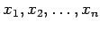
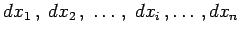
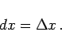
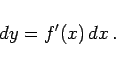
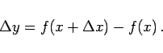

Inhalt Index DeskTop Bronstein

 Differentialrechnung Differentiation von Funktionen von mehreren Veränderlichen Partielle Ableitungen
Differentialrechnung Differentiation von Funktionen von mehreren Veränderlichen Partielle Ableitungen


Für jede der Variablen  läßt sich ein Differential  bilden. Die Definition fällt unterschiedlich aus, je nachdem, ob es sich um das Differential einer unabhängigen Variablen oder um das einer Funktion handelt:
|  | (6.37a) |
Dabei kann man  einen beliebigen Wert beimessen.
einen beliebigen Wert beimessen.
|  | (6.37b) |
|  | (6.37c) |